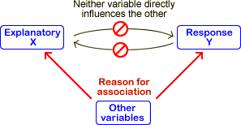

Causal relationships
A causal relationship between two variables is one in which it can be concluded that one variable affects the other, but the inverse relationship is impossible.
Causal relationships are important because they allow you predict the effect of changing the 'explanatory' variable.
It is impossible to conclude from observational data that a relationship is causal.
The problem is that other differences between the sampled units may cause the measured variables to appear related without any causal relationship being present. Possible mechanisms are:
|  |  |
Unobserved variables that underlie a relationship are often called lurking variables.
Is a relationship causal?
Causal relationships are particularly important to researchers. If one variable causally affects the other, then adjusting the value of that variable will cause the other to change. For example, if the milk yield of cows is causally affected by a dietary supplement, then yields can be increased by changing this supplement.
The data values themselves contain no information about whether a relationship is causal.
Causality can only be determined by reasoning about how the data were collected.
Religion and cancer
The scatterplot below shows data from a sample of towns in a region.

The positive correlation between the number of churches and the number of deaths from cancer is an example of a non-causal relationship — the size of the towns varies and the association between the two variables is caused by larger towns having more churches and also more deaths. Clearly decreasing the number of churches in a town will not reduce the number of deaths from cancer!
Smoking and lung cancer
The difficulty of inferring a causal relationship is illustrated by the difficulty experience by researchers in conclusively showing that smoking causes lung cancer.
It was observed in the first half of the 20th century that the incidence of lung cancer was increasing. One possible cause was the increased use of tobacco, but others were exposure to pollutants such as automobile exhaust, industrial pollution, smoke from domestic fires, and tars that were used in road construction. It was also possible that the incidence of lung cancer was unchanged but the disease was becoming correctly diagnosed more often. An editorial in the British Medical Journal in 1942 stated "It is doubtful whether the higher incidence of cancer of the lung observed in recent years is real or only apparent".
Even after the increase in lung cancer rates was accepted in the 1950s, its cause was harder to prove. It was easy to show that the rate of lung cancer was higher amoung smokers than non-smokers, but these two groups also differed markedly in their other characteristics — they differed in average age, sex, social class, urban/rural residence, form of domestic heating, type of employment and in many other ways. Tobacco companies continued to deny that smoking itself was the cause if cancer until much more recently. A large volume of observational data and complex analysis was needed to rule out other causes.